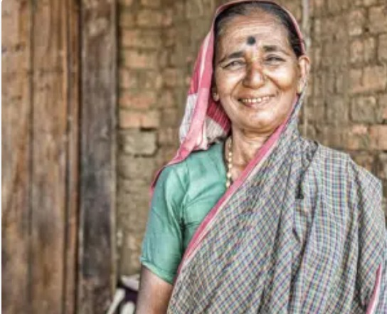
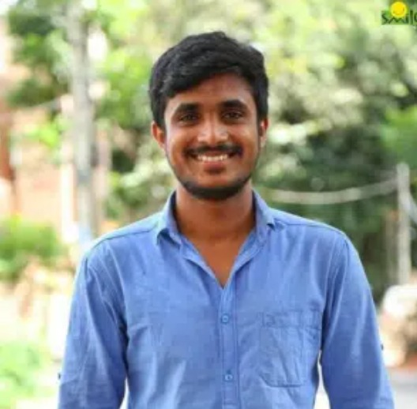
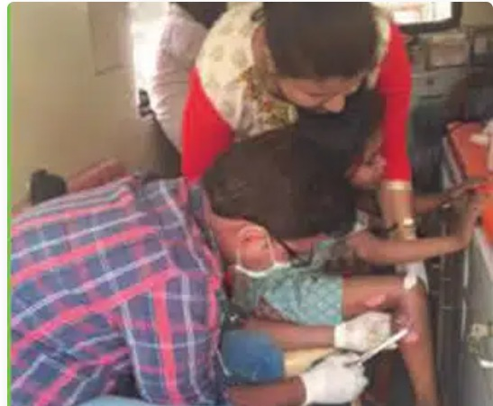
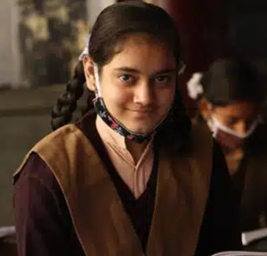

Sarah's Journey to Recovery
Background: Sarah, a single mother, struggled with a chronic illness that left her unable to care for her children properly.
Intervention: Our NGO provided Sarah with the necessary medical treatment, nutritional support, and counseling services.
Outcome: Today, Sarah is healthy, employed, and able to provide for her family, thanks to the comprehensive care she received.

John's New Lease on Life
Background: John, a farmer from a remote village, suffered from a severe eye condition that was rapidly leading to blindness.
Intervention: Our medical team performed a complex eye surgery, followed by regular check-ups and vision therapy.
Outcome: John regained his sight and returned to his livelihood, supporting his family and community once again.

A Community Transformed: The Tale of Village X
Background: Village X faced a high incidence of water-borne diseases, affecting the overall health and productivity of its residents.
Intervention: We launched a clean water initiative, built safe drinking water facilities, and conducted health education workshops.
Outcome: The village saw a significant reduction in disease cases, improved school attendance, and enhanced economic activities.

Empowering Women: Maria's Success Story
Background: Maria, a young woman from a marginalized community, lacked access to reproductive health services and education.
Intervention: Our NGO provided comprehensive reproductive health care, vocational training, and empowerment programs.
Outcome: Maria is now an advocate for women's health in her community, running a small business and mentoring other young women.
